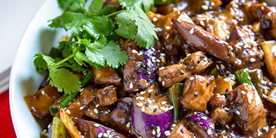

My Favorite Food
Szechuan Eggplant Stir-Fry
This is a wonderful recipe with the memory of Szechuan China!

Ingredients
- Chinese eggplants
- Chicken broth
- Brown sugar
- Soysauce
- Sesame oil
- Rice vinegar
- Garlic cloves
- Cilantro
- Dash pepper
- Olive oil
Directions
- In medium pan at medium heat, add butter or olive oil then minced garlic.
- When garlic turns light brown, add eggplant and stir occasionally for about 3 minutes.
- In separate bowl stir soy sauce, sugar, potato starch, sesame oil, rice vinegar.
- Add 1/2 cup chicken broth to the eggplant and let cook for about 2 minutes.
- Add the previously mentioned mixture to the mix, along with the celery.
- Turn down heat to a low and cook for another minute or so.
- Add pepper and cilantro to taste and leave on the burner until ready to serve.
For more information check out this site